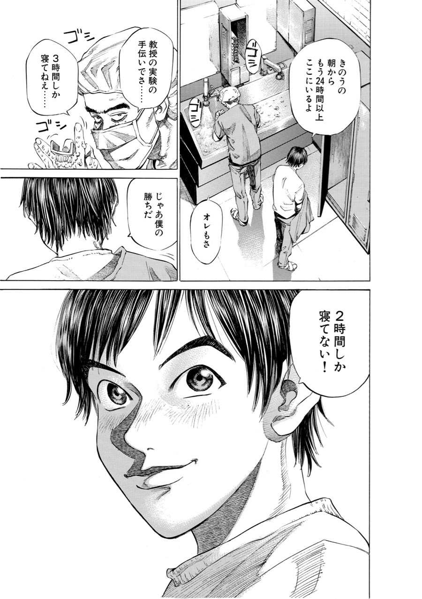
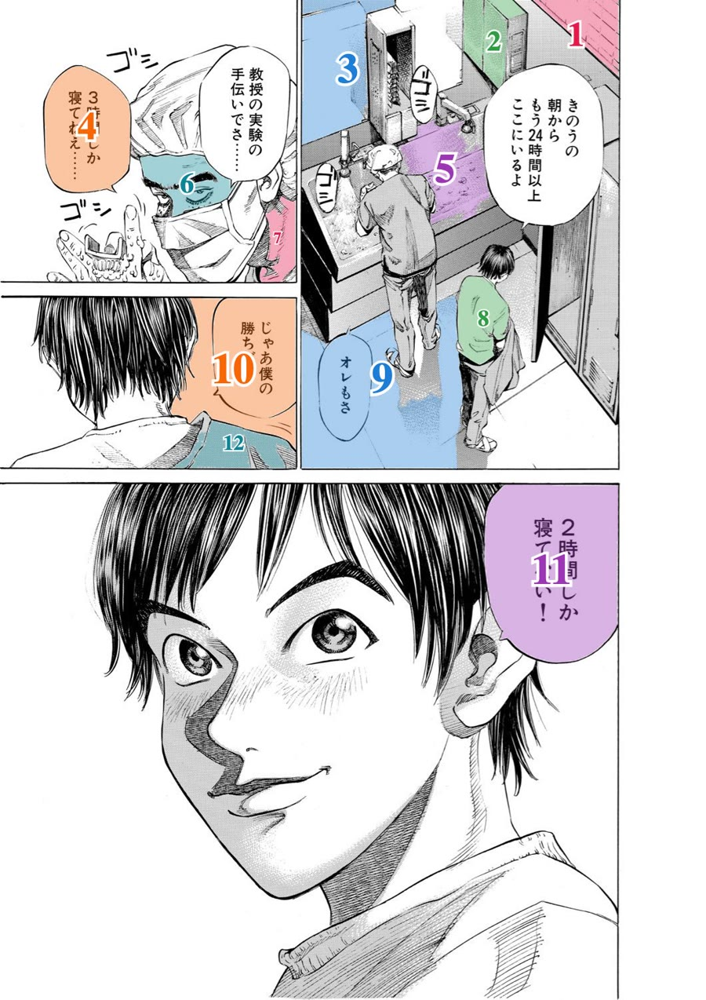
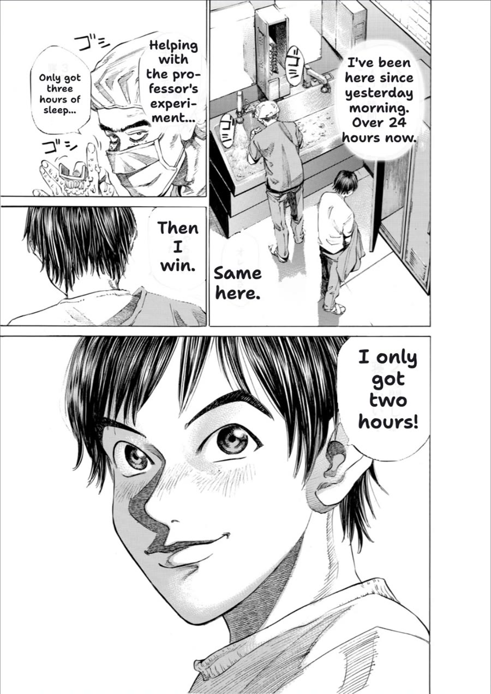
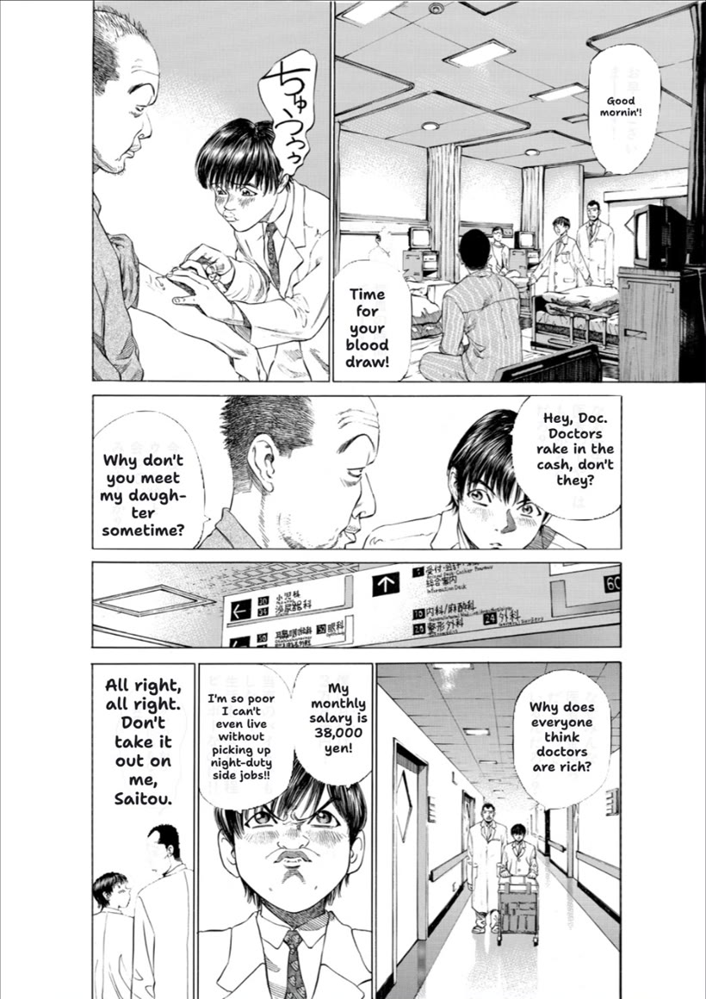
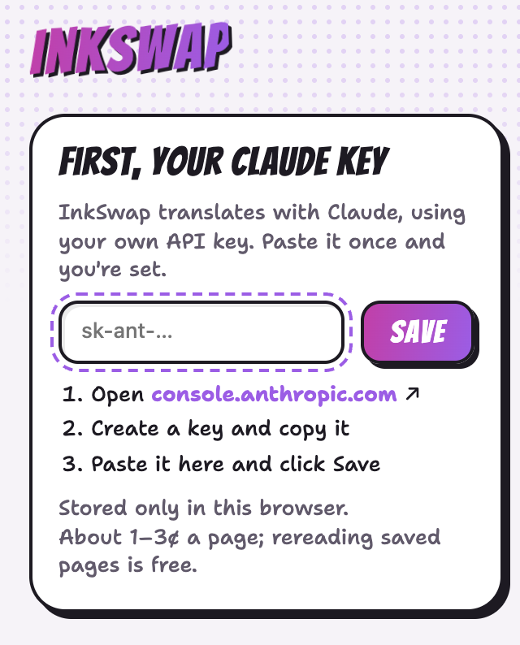
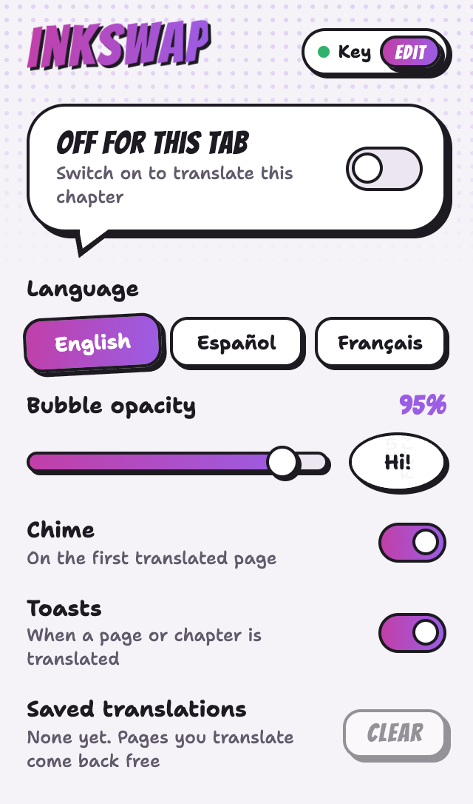

MangaDex
Single-page or long-strip reading. Pages translate as they come into view, a page ahead where it can, and it carries on into the next chapter without being switched on again.
mangadex.org
InkSwap is a Chrome extension that re-letters every speech bubble in your language, right on the page, by meaning instead of word for word.
Works on MangaDex and Shonen Jump+
Recorded from a real run on a real page. Scroll to watch it happen. (This website itself doesn't call Claude.)



InkSwap reads the page's image as it scrolls into view. When a site won't share the image, it takes a screenshot of what's on screen instead.
Right on the page, it looks for closed white shapes with letters inside, then shades and numbers each one, so Claude knows exactly where every line belongs.
Claude reads the page and says which line goes in which numbered shape. InkSwap checks each answer against where Claude saw the bubble before using it.
Each translation is painted in its bubble's exact shape and sized to fit, in a hand-lettered font. About 5 to 10 seconds for the whole page.
Pick a language in the popup and the chapter you're reading is translated again. Switch back and it's instant, because the earlier translation was saved.
Names and honorifics like -kun and -senpai stay as they are, and so does each speaker's tone.

InkSwap is built and tested for two sites.
Single-page or long-strip reading. Pages translate as they come into view, a page ahead where it can, and it carries on into the next chapter without being switched on again.
mangadex.org
Two-page spreads, read right to left; turn pages with the ← key. The site protects its images, so InkSwap translates what's on screen as you reach it.
shonenjumpplus.com
InkSwap isn't affiliated with MangaDex or Shonen Jump+.
So do bubbles already in your language, and anything too blurry to read with confidence.
Translations are saved in your browser, so pages you've read come back instantly, even after a restart. Only the translations are kept, never the pages.
Turn down bubble opacity in the popup and the Japanese shows through underneath.
Two bubbles drawn as one shape each get their own line, so nobody's dialogue runs into anyone else's.
A soft chime and a "Page translated" toast, and one "Chapter translated" for each new chapter. Both can be turned off.
If a page fails, it stays as it was, with a Retry button on it.
It's free on the Chrome Web Store.
Add to ChromeCreate one at console.anthropic.com. It's stored only in your browser. You pay Anthropic directly, about 1 to 3¢ a page in testing.

On MangaDex or Shonen Jump+, click the InkSwap icon and flip the switch, or right-click the page and choose Translate this page.
